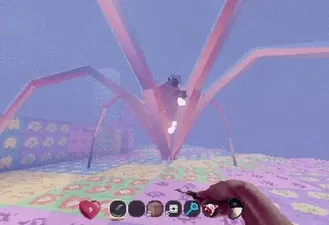
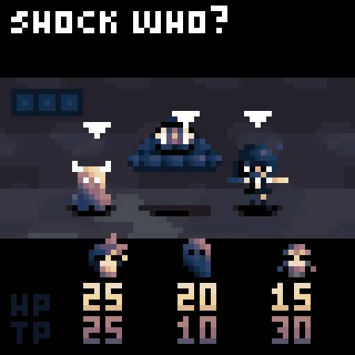
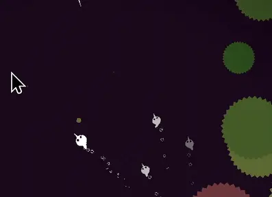
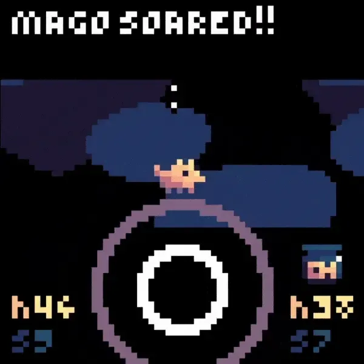
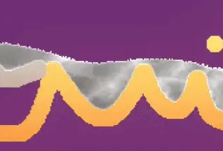
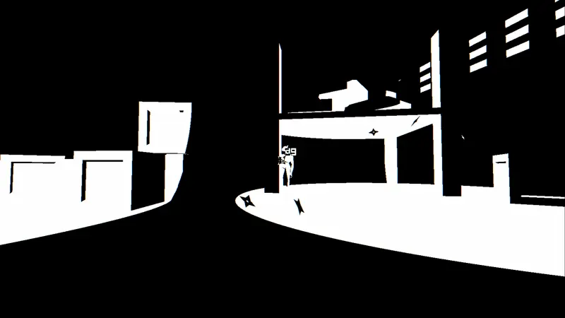
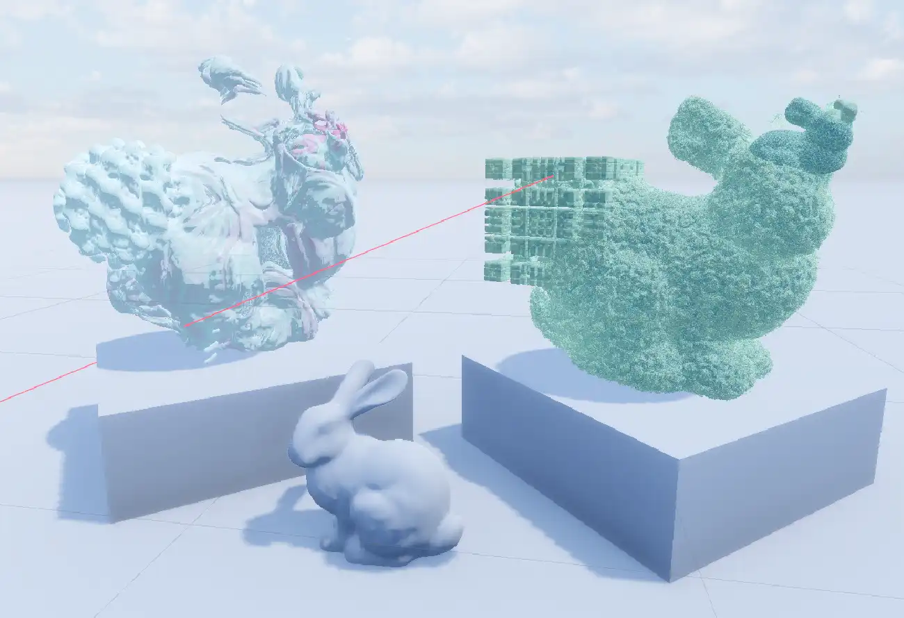
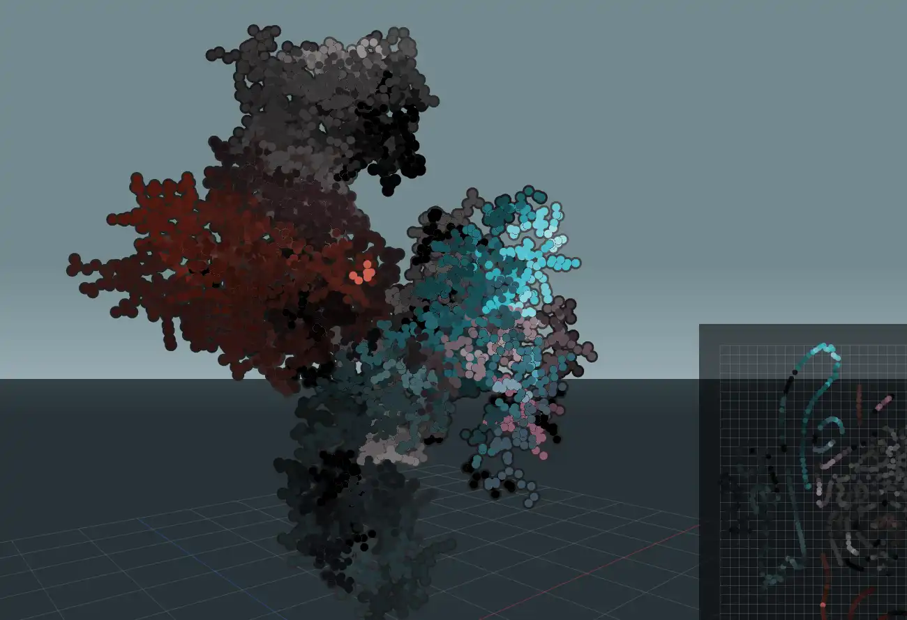

Hi, I'm
Lucy B. Locks
Game dev and researcher
About me
I'm a computer science student @ MIT. I like to make psychedellic games with lots of fractals. My academic research focuses on accessible software that helps people understand their mental and physical health.
My favorite things include: paleontology, history of religion, cooking, music production, digital art, JRPGs, and programming.
Games
Lucid Blocks
Published on Steam (2026)
Explore, build, and survive in a cryptic expanse oozing with dreamlike oddities and esoteric critters.

fractiwi
Ranked #4/256 in LowRezJam (2024)
Another mini RPG, but now surreal and exploration based. The debut of the bubblebears.

Void Fish
Ranked #20/568 in Fish Fest (2024)
A procedurally generated horror game where you must protect your flock of fish from the deep, desolate ocean.

Woof Wizard
Ranked #1/289 in LowRezJam (2023)
A mini RPG with action, adventure, and laser-shooting fish.

Sand Slide
Published on Google Play Store (2023)
A dynamic and physics-based sandbox game with 100+ elements and a custom element editor.

Night Shuriken
Ranked #1/38 in Texas Game Jam (2022)
Trapped in a dark warehouse, mysterious figures start to come alive. A short thriller shooter game.

Research
Brain Health App
MIT Mobile Technology Lab (2026)
An app that uses consumer EEG and fNIRS wearables to make cognitive impairment screening more accessible. Work-in-progress.

GD Fractals
MIT Computer Graphics Final Project (2025)
A Godot add-on that seamlessly renders 3D fractals based on user-designed shapes.

GD Mobile Physiology
MIT Mobile Technology Lab (2024)
A library that uses phone sensors to measure heart and breathing rate. Used in Nāda, a biofeedback meditation app.

Protein Visualizer
MIT Manolis Kellis Lab (2024)
An interactive visualization of biological protein structure and behavior using machine learning.
